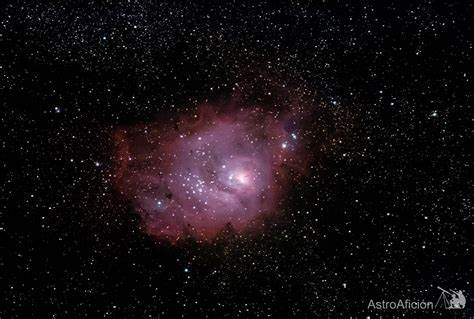

Problema: Cálcular la magnitud absoluta de la estrella
Descripción:
El angulo de paralaje de una estrella es de 0.01 segundos de arco y su magnitud aparente es 8.
Esquema

Fórmulas
M=m - 5*(log(d)-1)
Donde:
M es la magnitud absoluta de la estrella
m es la magnitud aparente de la estrella
p es el angulo de paralaje en segundos de arco
Datos:
m= 8.
p= 0.01 segundos.
Solución
a)La magnitud de la estrella es:
M = 8 -5 *(log(0.01)-1)